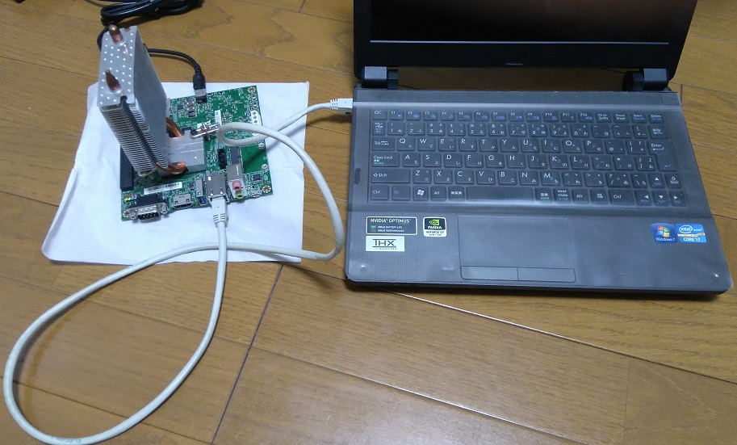

Remote connection without router

You can login to Jetson TK1 without display and router.
You can do it by directly connecting your Jetson TK1 to your MS Windows PC with an Ethernet cable.
In this method, your Windows PC becomes like router by enabling Internet Connection Sharing(ICS).
This page explains how to enable ICS on Windows 8.1. If you are using different version of Windows, google about how to enable ICS on your windows.
If you don't have a Windows PC but Linux PC, This page might help you.
Requirement:
- LAN cable
- Host PC with Microsoft Windows OS, Ethernet port and Wifi (You don't need Wifi access points)
- An SSH client for Windows
Instruction:
- Boot your Windows Host PC
- Open "Network Connections" page
Open the Control Panel, click Network and Sharing Center and click "Change adapter settings".
- Enable ICS
Right click Wi-Fi, click "Properties", click "Sharing" tab and select "Allow other network users to connect through this computer's Internet connection".
Set "Home networking connection:" to Ethernet and click OK.
- Connect Jetson TK1 to your Windows Host PC with an Ethernet cable
- Connect an AC adapter to Jetson tk1
Jetson TK1 boots as soon as you connect an AC adapter and automatically get an IP address from host PC.
- Find an assigned IP address
Open Command Prompt on host PC and run:
arp -a
Jetson TK1 might take about 60 seconds to get an IP address after boot.
First 6 numbers of Jetson's LAN port physical address is "00-04-4b".
Find an IP address followed by such a physical address from the output.
- Run ssh client in host PC and login to Jetson TK1 using found IP address.
Login as username:ubuntu/password:ubuntu.
Go to next step - Preparing System
Top